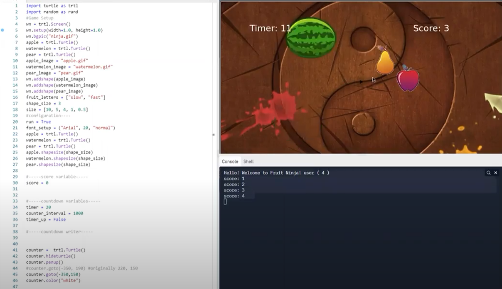
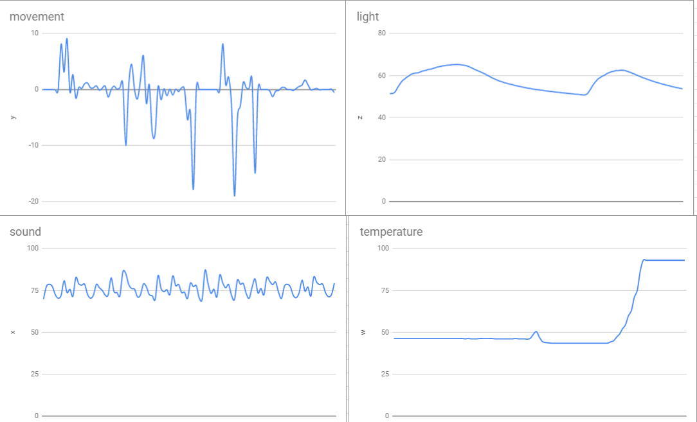
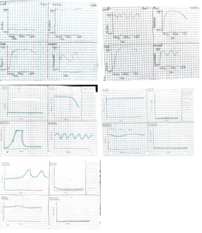
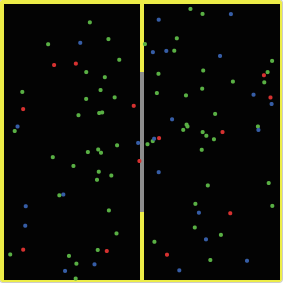

Home
Portfolio
About Me
This is my Portfolio Page!
Project #1
For my first project what my group and I did was make a ice cream maker. The code prints how many scoops would they like and the user can type how many scoops they want. After they say how many scoops they want, the code will ask the user which flavors they would like from what flavors we have on the menu. Then it will draw the cone and how many scoops they want with the flavor that they chose for each scoop and each flavor has its own unique outline color. After it draws the amount of scoops they want it will put a cherry on the very top scoop of the ice cream cone.

Project #2
For my 2nd project my group and i made a variation of the popular mobile game fruit ninja. The code of our project puts the three fruits at the top of the screen when the fruits are shown the timer at the top left. The user has 20 seconds to click on the fruit to get the best score possible. Once the 20 second timer at the top ends it will show a screen saying thank you for playing and display your final score at the top right.

Project #3
For my 3rd project we did it scratch this time and what my partner and i made was a adaptation of the popular game snake. What our code does for our scratch project is when you click the green flag it starts the game. Then it will switch to the game background from the starting screen. When it switches backgrounds the snake will ask for your name then you will type it and press enter to start the game. To move the snake you can use the arrow keys to go up down left and right, and to increase your score you need to touch apple with the snake then the apple will move to a random location when touched.

3.1.6 Rover Data Project
What we did to conclude from the data and get Desert Plains is that we first split up the data into 4 groups by how the data looked with how many digits there were, then we made graphs for each of the columns of data. Then we looked at the planet conditions and compared it to the 4 graphs. We used a process of elimination to figure out which planet it is we first took out low and constant since nothing was low for movement. Then after that we took out low for sound since there was nothing that was low for that sensor that matched.After doing all of that we came up with our answer which was Desert Plains.


3.2.4 Honey Data Project
What we did was we went to the USDA quick stats website and we got data on honey production for every state yearly. Then what we did with the data was we first analyzed the data and cleaned it up by removing unnecessary data in it and making it managable by putting it into a google sheets. After we cleaned up the data we got we took the data and used matplotlib to plot the honey data for each state on one graph. After we made the one huge graph with all for the states we divided it up into 3 seperate graphs from large, medium, and small honey producers. Once we finished making the 3 seperate graphs we then got the average honey production for each state by using sum. Then the last graph we made was a bar graph of the yearly total honey production over 4 different years. Once we finsihed making all of the graphs based of the honey data we got we made a analysis on whether or not the data was related to bee colonies within the U.S.

4.1.4 Understanding Complex Systems Project
What we did for this project was we went to NetLogo and searched up a simulation we liked and answer some questions with evidence. The simulation we chose was GasLab Second Law, what simualtion had was 2 sides of a box and gas particles and the gas particles bouncing and changing represented GasLab Second Law. The some of the questions we had to answer was waht did the turtles represent, what did the patches represent, then how randomness was used in the simulation.
